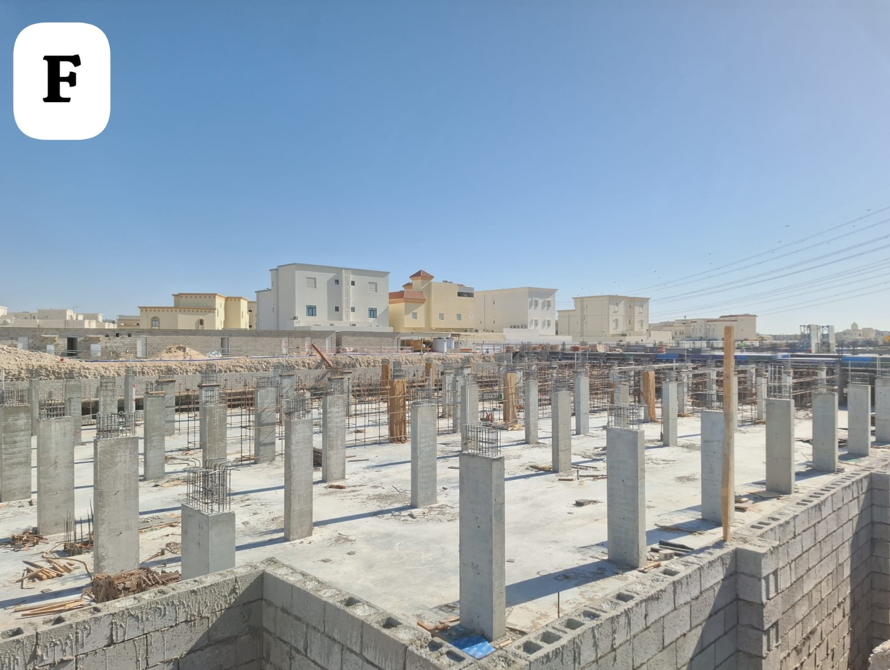
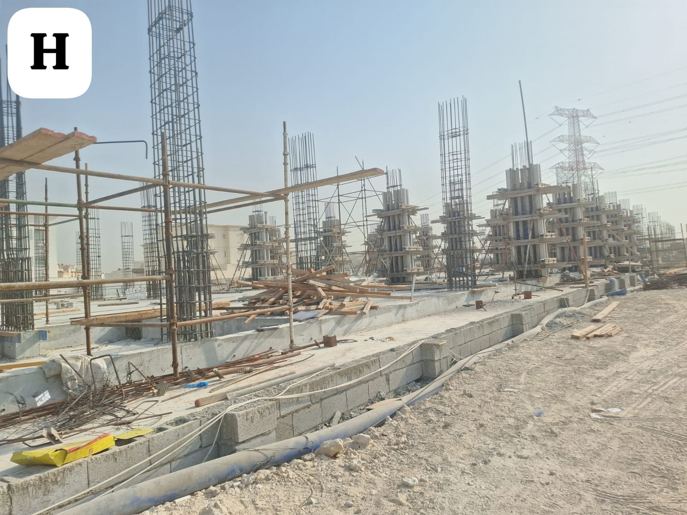
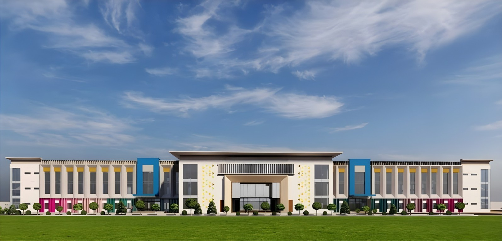

Current stage
Structure rising
Foundations are complete and ground-floor columns are cast across the site footprint.

Campus development · Al Wukair, Qatar
A new learning environment is taking form for DPS Millennium. Follow the journey from approved design to verified construction progress.
Construction underway · Tentative opening April 2027
Site record · eight verified photographs
The project today
We separate architectural imagery from real site photography and publish construction progress in a format that families can understand at a glance.
Current stage
Foundations are complete and ground-floor columns are cast across the site footprint.
Opening target
This is the current tentative opening period. Any formal revision will be published here.
Reporting standard
Every update is based on approved design material or photography taken at the project site.
Construction sequence
This page records what has been completed, what is currently visible on site and what families can expect to see in future updates.
01 / Complete
The foundation bases and ground-level structure establish the footprint of the future school.
Recorded in the site journal
02 / Current
Columns, reinforcement and formwork are now giving the campus its first recognisable form.
Construction underway
03 / Next
New photographs and approved information will be added as the project moves through its next milestones.
Updates will appear here
A school in progress
A campus is more than a building plan. It is the setting for future lessons, friendships, achievements and everyday school life.
The photographs on this page are a direct, honest view of the work happening now.
Real site photography
Architectural images are labelled separately so families can distinguish the planned campus from the current construction site.

The school taking shape
The campus is being developed as a place for learning, belonging and growth. The current structure is the first visible stage of that long-term commitment.
01 · Foundation
Foundation work and ground beams create the base for the future campus.
02 · Structure
Columns and formwork begin to define the layout of the school building.
03 · Next phase
New verified photographs will be added as each construction stage is completed.
Build journal
A visual record of the campus in development. Captions describe only what can be seen in each photograph.
Site photography · unretouched, taken at the project site in Al Wukair.
Campus design
The following images are architect's materials, shown separately from construction photography. They illustrate the intended front elevation of the campus.

The concept illustration shows the intended character and front elevation of the future school.
Architect's impression · indicative only

An earlier architectural study of the same elevation and its planning direction.
Architectural study · indicative only
Planned facilities
The current campus scope supports academic learning, practical discovery, reading, movement and gathering. Final specifications will be published by the school when confirmed.
Classrooms arranged by phase, from Nursery through Class XII.
Physics, chemistry and biology laboratories for senior students.
A central space for reading, research and independent learning.
Courts, play areas and a covered assembly space.
Project oversight
DPS Group representatives, the design team and the contractor meet through the build to review programme, quality and safety.


Stay informed
Register your interest to receive admissions news and future campus updates from DPS Millennium International School.